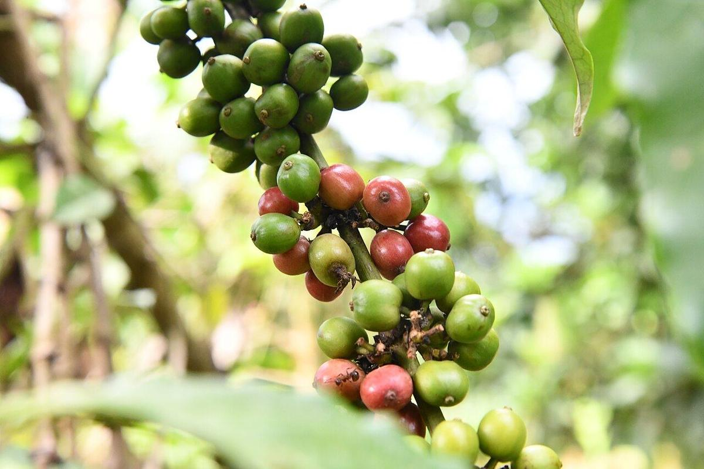

Arabica
Highland coffeeGrown on the slopes of Uganda’s mountains, where cool nights slow cherry ripening and build sweetness and complexity.
Growing regions
Mt. Elgon (Bugisu, Sipi, Kapchorwa) in the east, the Rwenzori Mountains in the west, West Nile (Zombo, Nebbi) and the Kigezi highlands near Mt. Muhabura.
Altitude
1,300–2,300 m above sea level. Higher farms produce denser beans with more complex flavour.
Processing
Mostly washed, which gives a clean, bright cup. Bugisu washed Arabica is Uganda’s best-known specialty coffee. Natural Arabica is traded as Drugar.
Flavour profile
Bright acidityFloralCitrusRed fruitCocoa & caramelWine-like